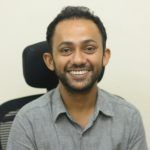
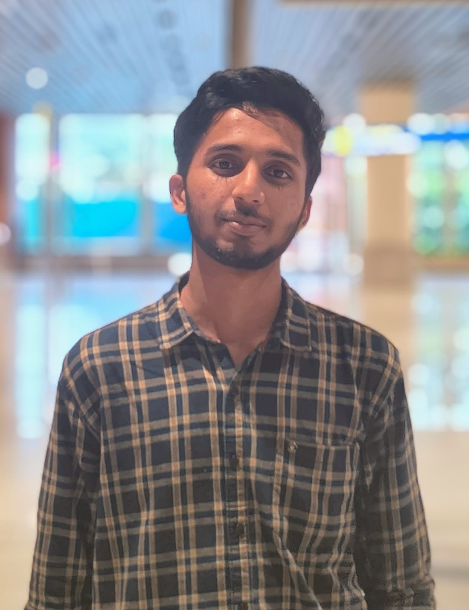
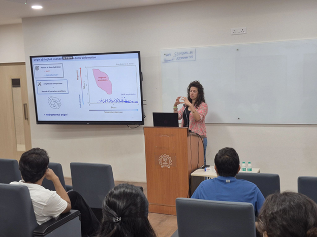
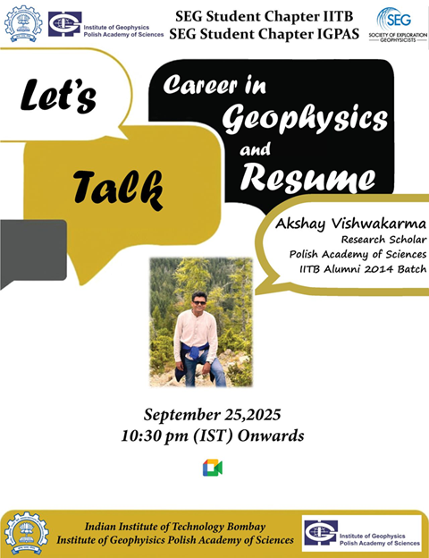
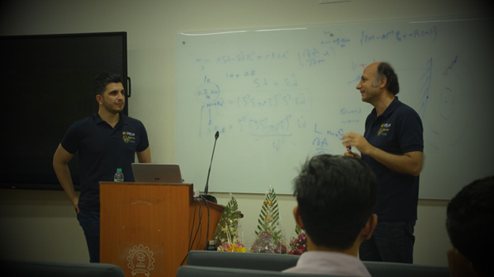

About the Chapter
SEG IIT Bombay Student Chapter
The Society of Exploration Geophysicists (SEG) is a global non-profit organization dedicated to connecting people and advancing the science of applied geophysics. With over 33,000 members in 138 countries and nearly 300 student chapters worldwide, SEG supports students and professionals through conferences, publications, and educational programs
The SEG Student Chapter at IIT Bombay brings together students interested in geophysics and geosciences and aims to strengthen learning in Applied Geophysics. The chapter regularly organizes seminars by academic and industry experts, research talks, technical workshops, and geoscience quizzes, helping students stay updated with modern techniques and developments in the field.
Why Join SEG?
- Becoming a member of SEG provides students with several academic, professional, and networking opportunities. Members can benefit from:
- Annual Meeting Travel Grants that support student participation in SEG’s global conferences.
- Student Leadership Symposium (SLS) in the United States, organized for student chapter leaders.
- Student Education Program (SEP) that offers exposure to advanced geophysical research and training.
- Participation in the International Geosciences Student Conference (IGSC), where students interact with peers from around the world.
- Opportunities to participate in events such as the Challenge Bowl and Photo Contest.
- Access to the Student Expo, which connects students with geoscience professionals and industry representatives.
- Opportunities to participate in events such as the Challenge Bowl and Photo Contest.
- Full online access to the SEG Digital Library, which contains a wide collection of geophysics research papers and technical resources.
- Eligibility to apply for SEG Scholarships, typically ranging from $300 to $2100.
Council Members

Prof. Bharath Shekar
Faculty Advisor

Aman Kumar Vishwakarma
President
About Me
I’m a geophysics PhD student at IIT Bombay studying the mechanics of the Earth’s lithosphere. My research combines gravity data, flexural modeling, and computational methods to understand tectonic processes in subduction zones. I enjoy turning geophysical problems into models and code that help reveal what’s happening beneath the surface.

Deepika Verma
Vice President
About Me
I’m Deepika Verma, an MSc geophysics student at IIT Bombay with an interest in the mathematics behind the physical processes occurring within the Earth. My interests include signal processing, seismic data analysis, and neural networks, where mathematical intuition meets real geophysical data. I enjoy building models, exploring patterns in signals, and using computational methods to better understand the Earth's subsurface.

Bhaskar Rakshit
General Secretary
About Me
I am Bhaskar Rakshit, final year Msc Geophysics student. I feel enjoyment in solving seismic problem with the help of my numerical computation skill. I have explored seismic by performing seismic data processing, and currently working in FWI. I am machine learning enthusiastic having some knowledge of ML algorithm.My future goal involves implementation of ML technique in different geophyical exploration.

Muhammed Jasir A S
Treasurer
About Me
I’m Muhammad Jasir A S, an MSc second-year student interested in ore geology and the processes controlling the formation and distribution of mineral deposits. My focus includes mineral exploration, economic geology, and understanding geological controls on ore formation. I am keen on applying scientific methods to study subsurface mineralization and its role in sustainable resource development.
Activities
Events Organized by SEG IIT Bombay Student Chapter
The SEG IIT Bombay Student Chapter regularly organizes academic and professional events to promote learning and collaboration in geophysics. These activities include guest lectures, technical workshops, and career-oriented sessions that help students gain exposure to current research and industry practices.
In previous years, the chapter conducted events such as a guest lecture on “Unconventional Shale Reservoir Characterization” by Dr. Malleswar Yenugu and a workshop on Seismic Data Processing by Dr. C. V. Rao, both held at the Department of Earth Sciences, IIT Bombay.
This year, the chapter organized a special lecture by Dr. Manon Bickert on “Hydration along Oceanic Faults: From Microscale Deformation to Plate Divergence”, providing insights into oceanic fault processes and plate tectonics.

A career talk on “Career Opportunities in Geophysics and Resume Building” was also delivered by Mr. Akshay Vishwakarma, an IIT Bombay alumnus and researcher at the Institute of Geophysics, Polish Academy of Sciences.

Additionally, in collaboration with the EAGE Student Chapter IIT Bombay, a two-day workshop on Extended Full Waveform Inversion (FWI) was organized, where experts shared theoretical and practical insights into advanced seismic inversion techniques.

Through such initiatives, the SEG IIT Bombay Student Chapter continues to create opportunities for students to engage with experts and stay connected with developments in geophysics.
How to Join
- Go to the SEG Website. Open the official SEG website: https://www.seg.org
- Click “Join SEG”. On the homepage, look for Membership or Join SEG in the top menu and click it.
- Select Student Membership.
You will see different membership categories.
Choose Student Membership.
Student membership is usually free or very low cost for students.
- Fill Student Details
- Complete Registration.
Submit the form.
- Receive Confirmation.
You will receive a confirmation email with:
- Membership ID
- Access to SEG resources
- Student benefits